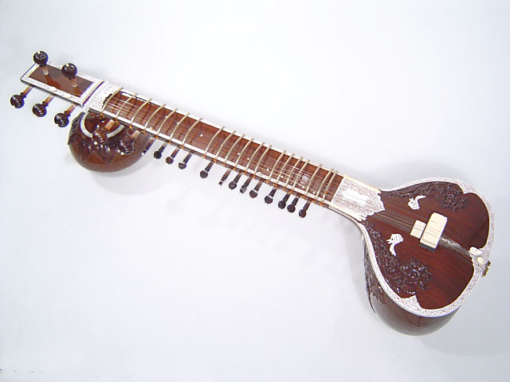
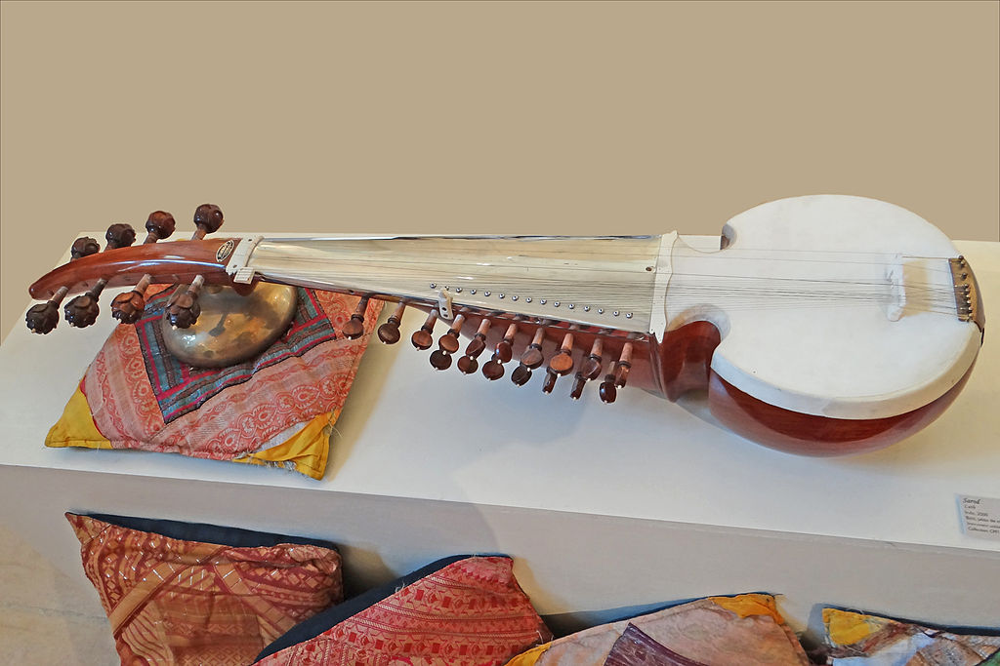

India
Just like most countries, there are many different styles of music found within India, in GCSE music there is a focus on classical North Indian music. Musicians in India tend to learn to play raga by imitating and memorising music played by others such as their teachers. Ragas are patterns of notes, each rag has a particular ascending and descending pattern, and is acssociated with a different time of day, season , or mood.
North Indian Intruments
Classical music ensembles from North India tend to only have a handfull of players, most instruments are played whilst on the floor. There are a wide variety of different intruments that are used in these ensembles, some of these intruments are described below.
The Sitar
This is a long-necked plucked instruments,that have moveable frets. A metal plectrum which is used to pluck the strings. They have six/seven main strings, and tweleve smaller strings underneath called sympathetic strings. 
The Sarod
Just like the sitar, the sarod is a plucked string instrument. However, it shorter than the sitar and has no frets. It is played with a wooden plectrum instead of the metal plectrum used with the sitar. Once again, this instrument is made up of main strings and sympathetic strings.
This video shows Ustad Amjad Ali Kahn playing the Sarod, Khan is argued to be one of the greatest Sarod players who still plays today. Thanks to Kahn, the Sarod has been popularised as a musical instrument worldwide.